浏览器打开此页 → 打印 → 存 PDF → 关掉页眉里的网址。
FIDV
BB_Research_Docs_Commitments/ 里 44 份是 Bloomberg Intelligence。这一夹整份退出。上一份分析用它们做的事也退出：租约调整后的债务存量、利差对期限的曲线、降级风险里的债券池、贷款价值比，都不再作为这份结论的依据。
留下 91 份。作者是瑞银、摩根大通、巴克莱、德银。其中一份与 9 月 10 日瑞银甲骨文《AI Bends the Growth Curve Higher》重复。股权作者自己写下的融资句子仍然留着，例如甲骨文 2026 年的筹资说明、Alphabet 的股权增发。那是他们的文字，不是彭博情报的信用短笺。
这组研报把需求写成还在，把限制写成供给。内存、电力、设备和机架交付，比订单消失更常被写成瓶颈。云的变现已经被积压和增速画出来。还开着的争论是资本开支还要加多少，以及这些开支的回报能不能在利润率和自由现金流里看见。
卖方之间的分歧主要在 Alphabet，不在需求有没有。瑞银承认搜索和云的变现，同时把 2026 年资本开支指引远高于原先预期写成风险收益上的保留，评级维持中性。摩根大通同期维持超配，并把大规模资本开支写成从强势位置出发。甲骨文两边后来都是买入或超配：增长加速被写成已经发生，资金需求被写成还在争论，但不再用信用短笺的曲线来收束。
产业链因此分成三层。上面是英伟达和云厂商的订单与积压。中间是晶圆设备、存储和出口。下面是电力和托管，时间闸门是拿到电，不是拿到意向订单。
| 层 | 这组研报怎么写 | 风险被放在哪里 |
|---|---|---|
| 需求与积压 | 英伟达积压口径在 GTC 从先前的 5000 亿美元（不含 Hopper，2025–2026）改写成 2025–2027 年 1 万亿美元以上。台湾出口的月度回落被反复写成季节性正常化。 | 毛利率。内存涨价被写成近端压力。需求本身不被写成已经打断。 |
| 云的变现 | Alphabet 云积压从 2025 年四季度约 2400 亿美元，到 2026 年一季度约 4600 亿美元，再到二季度约 5100 亿美元。甲骨文 9 月当季收入增速约 30%，云基础设施恒定汇率约 120%，新增约 850 兆瓦。 | 资本开支还要上修多少，自由现金流何时跟上。瑞银对 Alphabet 更保留，摩根大通维持超配。 |
| 电力与托管 | 瑞银首次覆盖五家托管股（HUT、WULF、APLD、CORZ、CIFR）给买入。已租容量约 5 吉瓦，合同收入约 1250 亿美元，另有约 12 吉瓦的扩展。 | 交付和杠杆。电够不够，比需求叙事更接近这层的风险。 |
瑞银对英伟达全年维持买入。1 月 CES 之后，需求被写成足以推动 2026 和 2027 自然年盈利上修。2 月业绩指引收入 780 亿美元，高于该分析师听到的市场期待，积压看到 2027 年，存货采购承诺环比接近翻倍。3 月 GTC 把积压口径从先前 5000 亿美元（不含 Hopper，覆盖 2025–2026）更新为 2025–2027 年 1 万亿美元以上。按瑞银自己远高于市场的模型，这张新图对应的 2027 年数据中心收入仍比他们的模型低约 600 亿美元，但他们认为交期还够，新订单还能加进去。会场侧记里，新云厂商各代 GPU 利用率被说成满载。
台湾出口月度数据多次低于季节性。瑞银每次都把回落写成正常化，不写成需求转折。德银 8 月 31 日的半导体会议纪要写的是全行业：公司谈基本面稳，投资者更悲观，悲观来自周期见顶、DRAM 价格和内存墙。纪要里的句子是，AI 计算需求没有放慢；投资者当时假设 2027 年超大规模云资本开支约 1.2 万亿到 1.5 万亿美元，高于 2026 年约 8000 亿美元；限制在内存，其次在电力。
8 月英伟达业绩后，瑞银写道公司开始对 2027 自然年给出更明确的指引，即便内存涨价压毛利率，指引下的每股收益仍高于 16 美元。9 月回购授权增加 1500 亿美元、至 2350 亿美元，对瑞银 2027 自然年每股收益估计只增加约 0.08 美元。
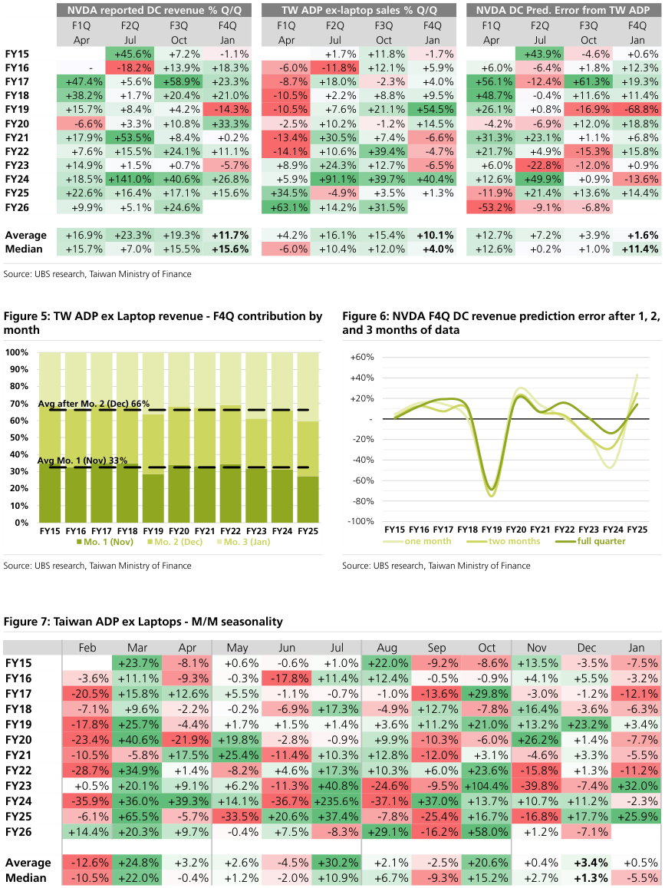
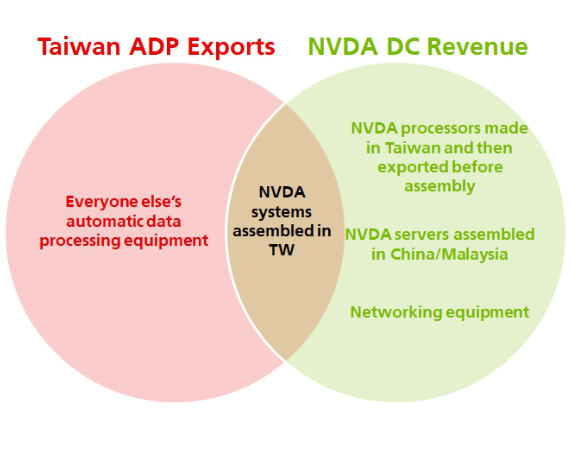
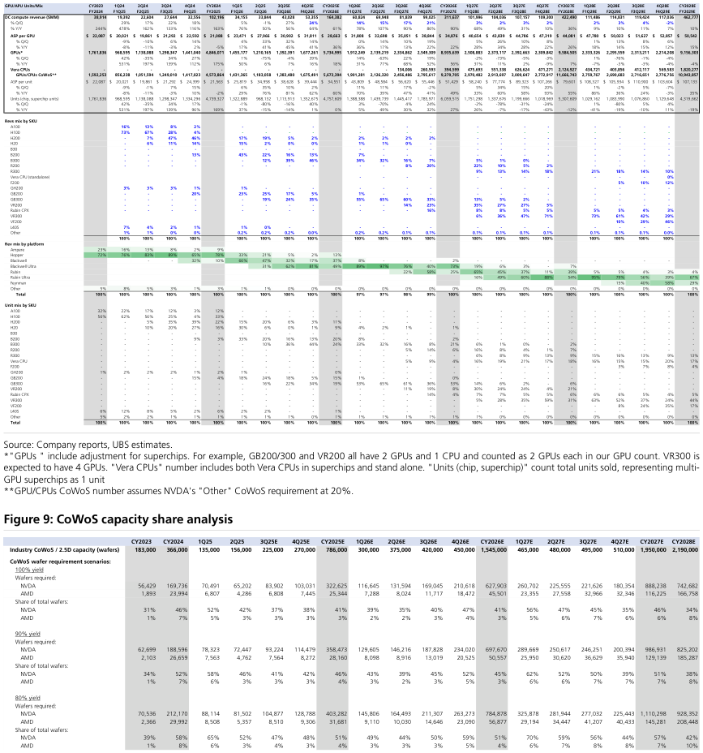
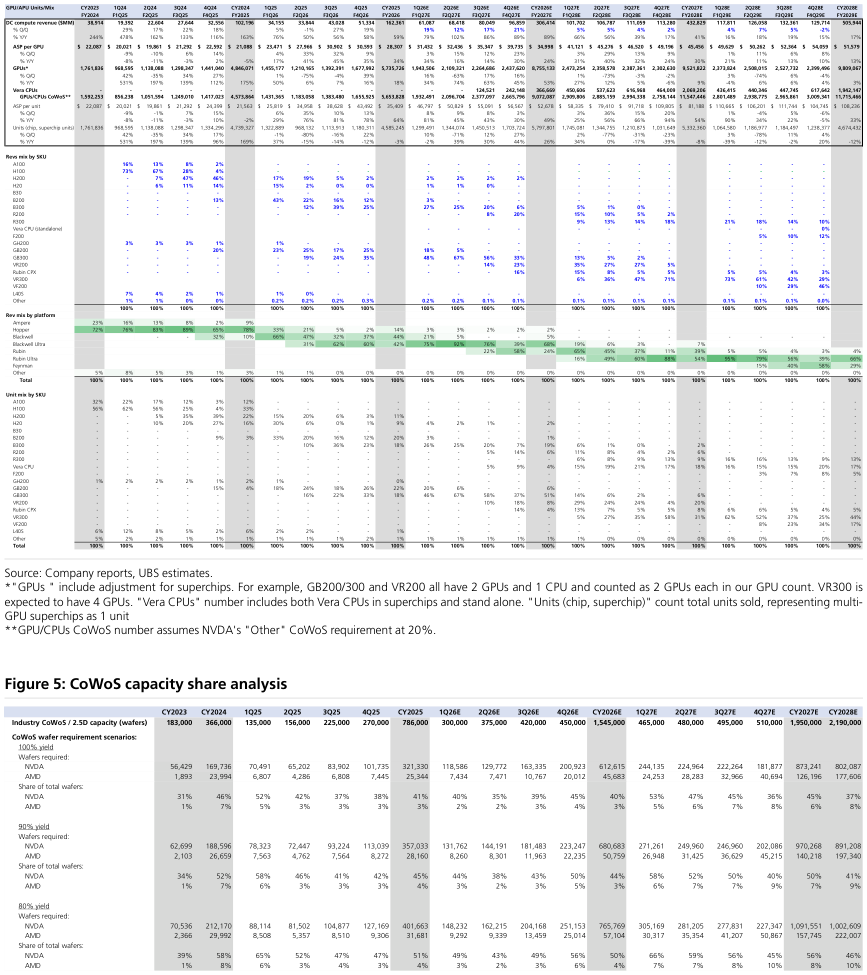
留下的图几乎都在做同一件事：把云厂商的资本开支叠在一起，再把英伟达数据中心收入放在旁边。瑞银的堆叠里，2026 到 2028 估计年的柱子明显高于 2025。增量支出和英伟达收入在较远的年份不再同向：支出的增量回落时，收入柱仍高。股权笔记把风险画成支出还会不会继续抬高芯片收入。
Alphabet 是这张图里最清楚的分歧。2 月瑞银的一季快评写下 2026 年资本开支指引 1750 亿到 1800 亿美元，当时共识约 1180 亿美元，瑞银自己原先约 1250 亿美元。积压和搜索超预期被承认。6 月拟议约 800 亿美元股权融资，伯克希尔约 100 亿美元参与。瑞银把稀释和 2027 年以后可能更高的资本开支写成负面，把伯克希尔入股写成对资本开支回报的背书，评级仍是中性。摩根大通 2 月把同一轮资本开支写成从强势位置出发，维持超配；4 月底目标价从 395 美元调到 460 美元；7 月业绩后目标价改到 420 美元，仍写逢低买入。
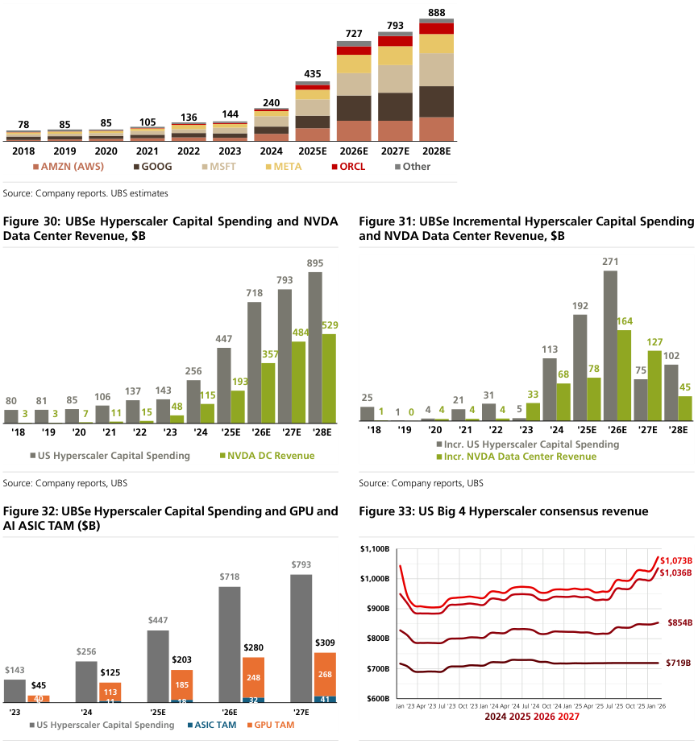
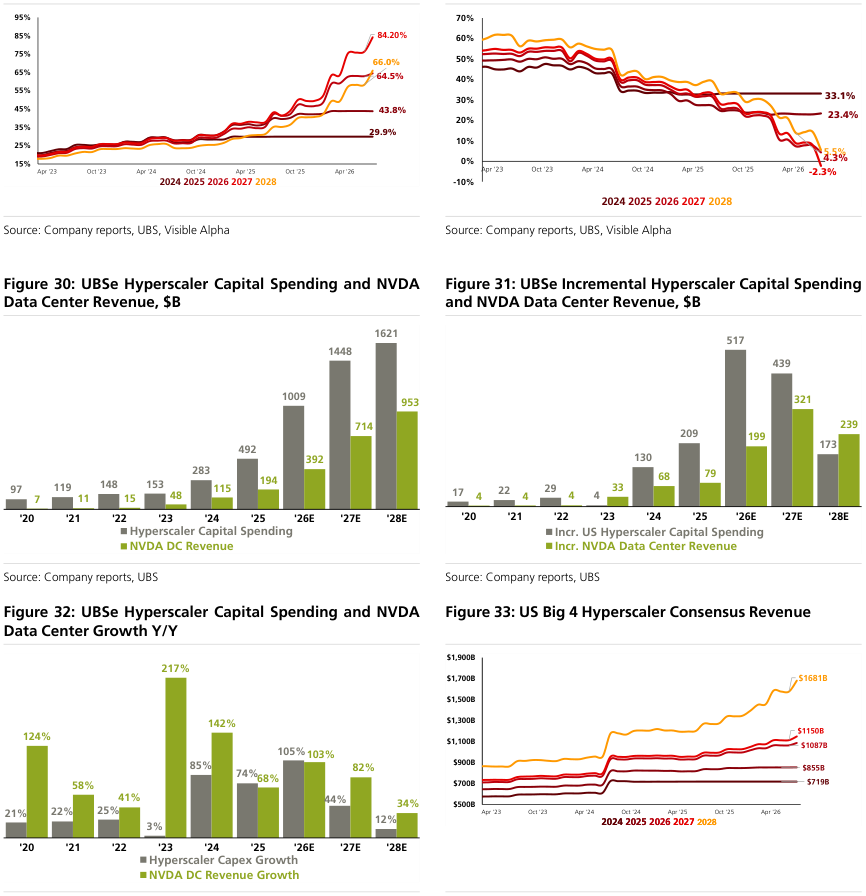
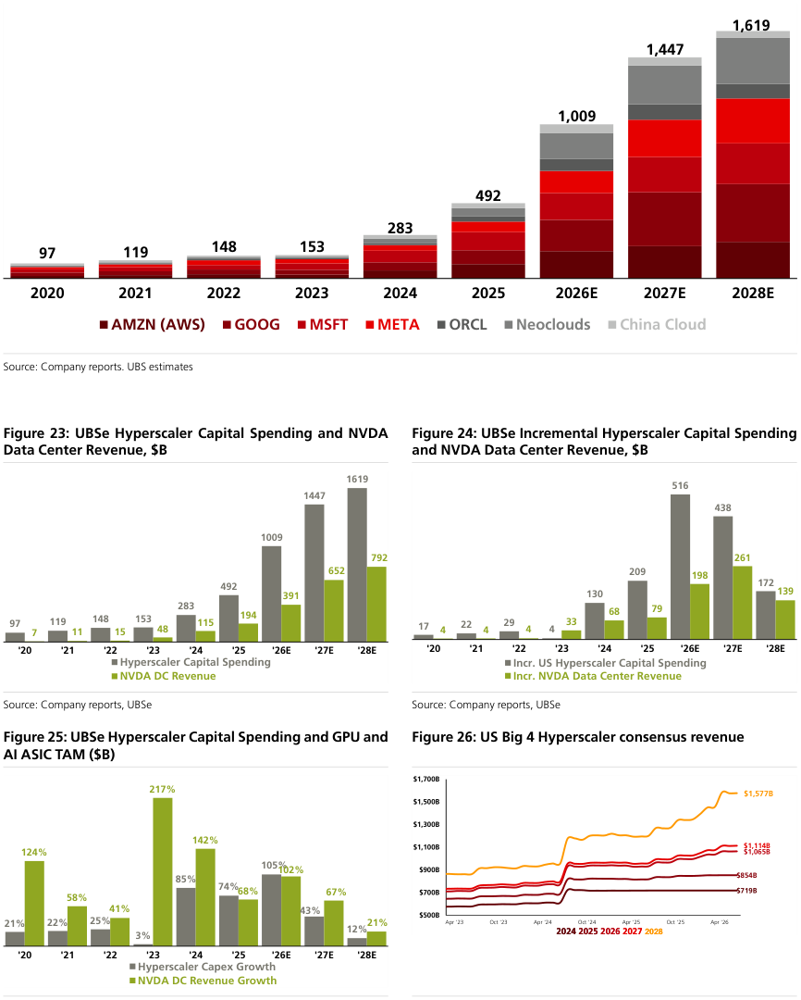
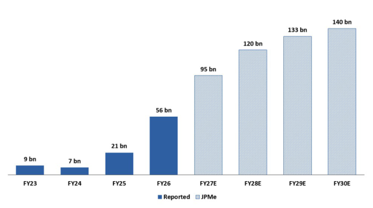
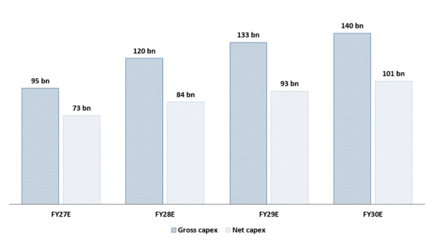
Alphabet 的云积压是这组里最完整的一条序列。瑞银 4 月一季度快评写下约 4600 亿美元，对比 2025 年四季度约 2400 亿美元，云收入增速约 63%。7 月二季度快评写下约 5100 亿美元，对比一季度约 4620 亿美元，云利润率从 32% 到 36%。瑞银因此认为每股收益在 2026 年下半年仍能增长，同时在随后的正式点评里把资本开支强度上调和招聘写成利润率的拖累。4 月一条快评写 Alphabet 拟向 Anthropic 投资 100 亿美元，另有 300 亿美元视目标而定，并类比 AWS 的吉瓦级容量，认为有可能再增加约 1000 亿美元云积压。这是可能性，不是已披露的积压。
微软全年买入。1 月季报后 Azure 恒定汇率约增 38%，略低于该分析师所说的 39% 市场期待，M365 也没有给到他们的估计。7 月底季报后，Azure 实际与指引约 43% 和 45%，高于约 41% 和 42% 的期待，并且资本开支指引没有再上调。瑞银把这组结果写成更干净的公式：云增速上来，资本开支不再跟着加。威斯康星和亚特兰大的 Fairwater 数据中心被写成 Azure 的近端产能，笔记里用了现场照片。
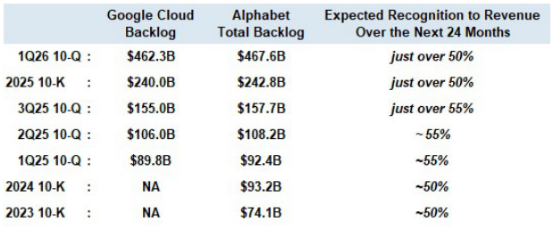
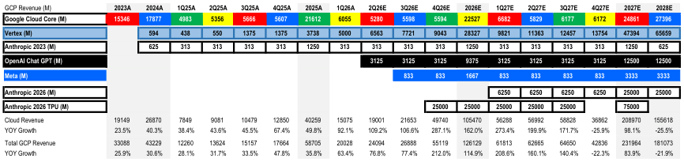
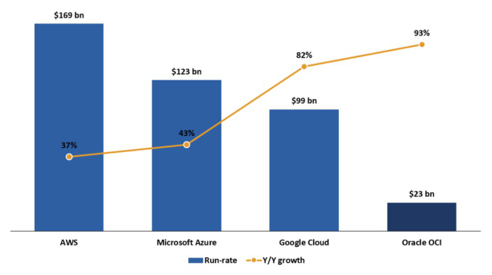
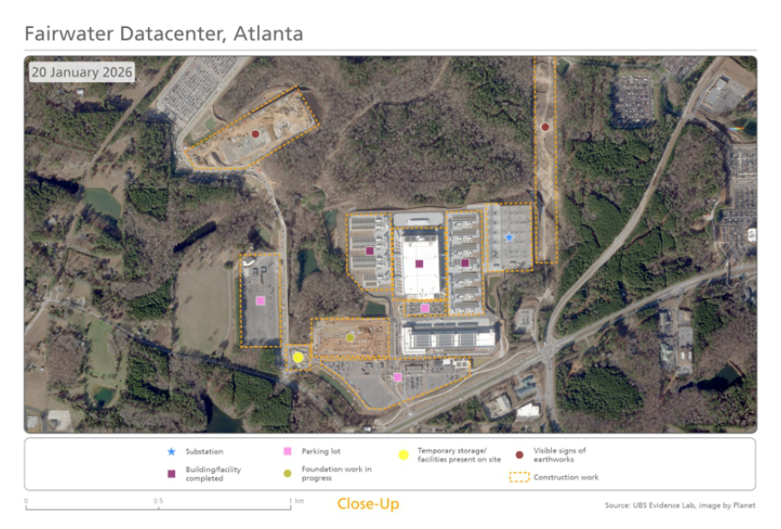
瑞银对甲骨文从 1 月到 9 月维持买入。1 月的题目是股价自 9 月中旬高点回落约 41%，以及 OpenAI 叙事。2 月公司在发债前说明 2026 年筹资约 450 亿到 500 亿美元，债务与股权大致各半，并承诺维持投资级。瑞银把这次说明写成融资风险缓和。6 月业绩后，瑞银认为盘后下跌过重，资本开支高峰被写成在望。8 月股价在 5 月季报后再跌约 27%，作者列出的担忧包括 AI 基础设施资本开支、回报率、大型数据中心新债的信贷市场紧张，以及在建站点延期。9 月一季度：收入增速约 30%，一年前约 11%；云基础设施恒定汇率约增 120%，作者原先假设增速持平；新增约 850 兆瓦；2027 财年资本开支指引重申 900 亿到 950 亿美元，美元资本开支高峰在 2027 或 2028 财年；200 亿美元增发完成，并重申本自然年不再额外融资；GPU 续约和转售价格上浮 20% 以上。负面是 2027 财年收入指引没有上调。
摩根大通 3 月 9 日仍是中性。3 月 11 日改为超配，当时股价 149.40 美元，12 月目标价从 230 美元降到 210 美元。升级理由是大跌之后预期已经很悲观，以及加速开始兑现。9 月一季度点评维持超配，12 月 2027 年目标价 200 美元。标题里的两句是：三位数的基础设施增速，再加上 260 亿美元积压，把收入路径写实了；资金仍是争论点。
这份结论停在这里。甲骨文的租约总规模、调整后债务在信用发行人里的位置、信用违约互换，来自已经拿掉的那 44 份，不再写入。
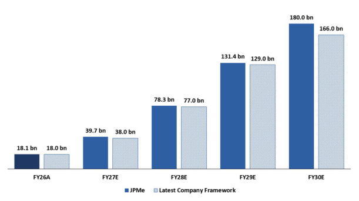
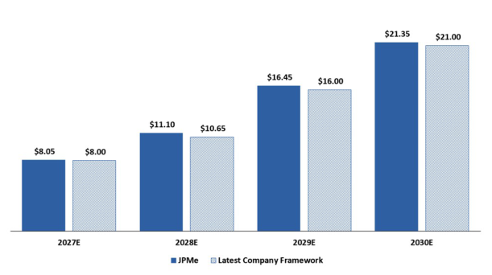
应用材料全年买入。2 月系统和晶圆设备的语气被写成与同业相近，系统业务指引至少同比增长 20%。5 月的题目是晶圆设备超级周期，增长主要卡在供应链能转多快，并写下约 27 美元每股收益的路径。8 月指引平淡、毛利率评论偏弱，买入仍在。这层的风险是交付速度和利润率，不是需求消失。
存储在留下的笔记里是短缺，不是过剩。摩根大通 9 月首次覆盖海力士 ADR，超配，目标价 245 美元，当时价格 185.55 美元。英飞凌汽车业务的客户被写成因为数据中心挤占供给而补库存。德银纪要把内存和电力写成瓶颈，和这两条是同一方向。
托管是瑞银 9 月 22 日首次覆盖的五家：HUT、WULF、APLD、CORZ、CIFR，都是买入。已租容量约 5 吉瓦，合同收入约 1250 亿美元，扩展机会另约 12 吉瓦。他们估计 2028 到 2030 年全球新数据中心容量约 260 吉瓦。股价大致反映已签约资产。风险写成早期、有杠杆，以及能不能把电力管道变成长期合同。图是地图和兆瓦，不是收入柱。
阿卡迈不在这五家里。摩根大通维持中性，目标价调到 167 美元。Anthropic 的 116 亿美元、多年 CPU 合同使 2026 年已签容量合同达到 144 亿美元。可见度上来了，资本开支相对收入的时点仍是限制。2027 年调整后每股收益估计从 7.29 美元降到 6.06 美元。
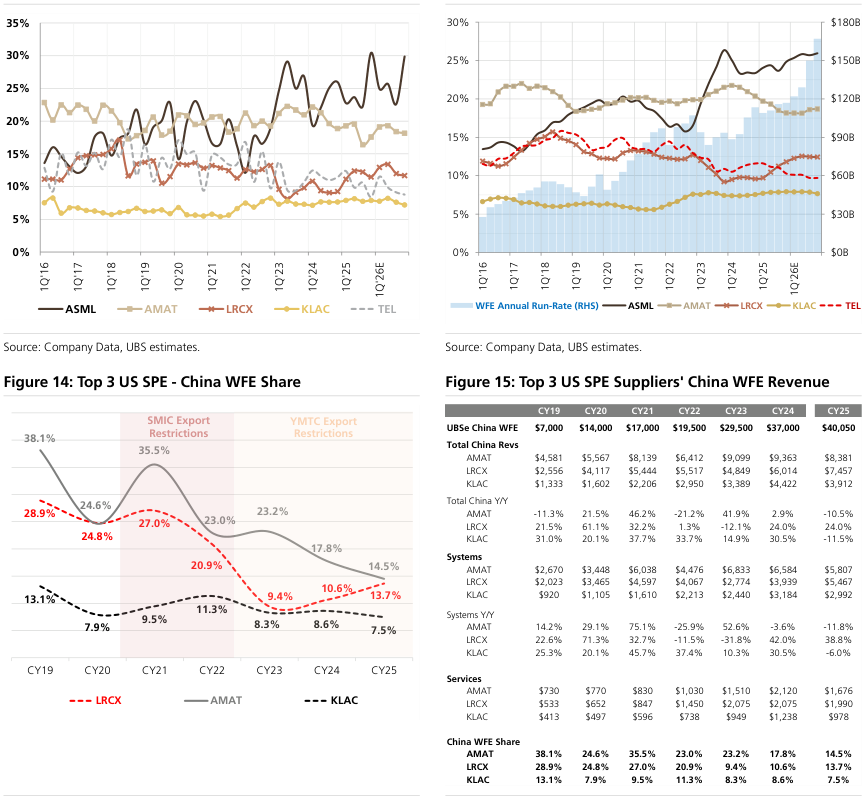
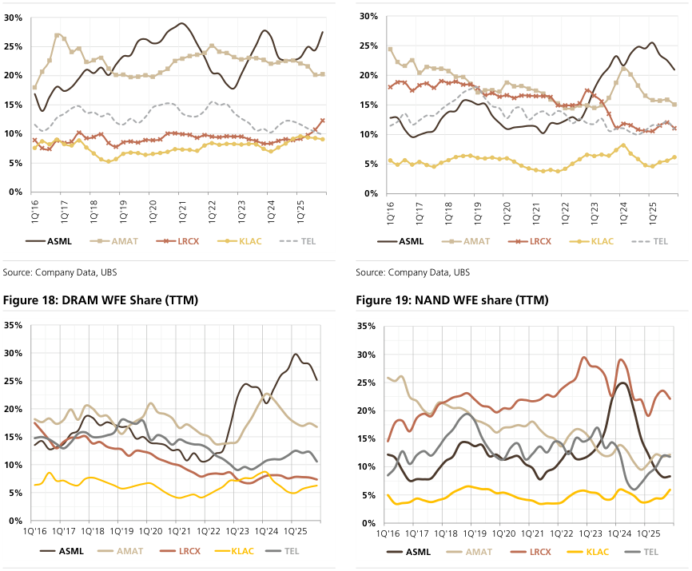
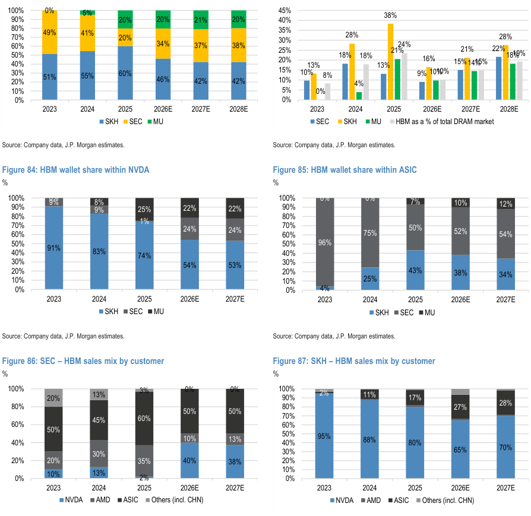
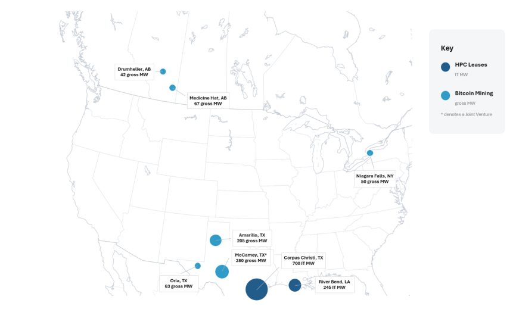
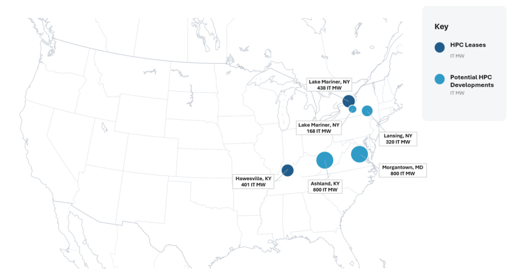
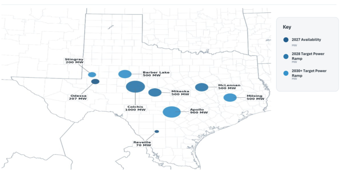
没有把瑞银的中性和摩根大通的超配合成一个评级。没有把英伟达的积压口径换成公司已确认的 2027 年收入。没有把托管合同收入写成云厂商已经付清的现金。没有把德银纪要里投资者假设的 1.2 万亿到 1.5 万亿美元资本开支写成公司指引。
Bloomberg Intelligence 那 44 份仍在 cabinet/BB_Research_Docs_Commitments/，只是不再进入这份结论。